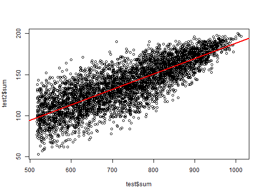

Standard univariate statistics for columns of a big.matrix.
For now, the sum and var are implemented
(the mean and sd can easily be deduced, see examples).
big_colstats(X., ind.row = rows_along(X.), ind.col = cols_along(X.))
Data.frame of two numeric vectors sum and var with the
corresponding column statistics.
colSums apply
#> 'data.frame': 4542 obs. of 2 variables: #> $ sum: num 680 821 789 843 562 666 902 537 536 553 ... #> $ var: num 0.46 0.324 0.393 0.311 0.518 ...# Only with the first 100 rows ind <- 1:100 str(test2 <- big_colstats(X.desc, ind.row = ind))#> 'data.frame': 4542 obs. of 2 variables: #> $ sum: num 138 157 115 181 92 106 167 124 120 94 ... #> $ var: num 0.46 0.369 0.513 0.176 0.579 ...plot(test$sum, test2$sum)abline(lm(test2$sum ~ test$sum), col = "red", lwd = 2)#> [1] TRUEall.equal(test2$var, apply(X.ind, 2, var))#> [1] TRUE# deduce mean and sd # note that the are also implemented in big_scale() means <- test2$sum / length(ind) # if using all rows, # divide by nrow(X) instead all.equal(means, colMeans(X.ind))#> [1] TRUEsds <- sqrt(test2$var) all.equal(sds, apply(X.ind, 2, sd))#> [1] TRUE